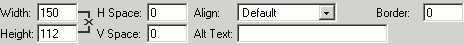

Nachdem Sie ein Bild ausgewählt haben, stehen Ihnen noch folgende Optionen zur Verfügung:
- Abstand – Damit ist der Abstand des Bildes zu anderen Objekten gemeint (Text, Bilder). Benutzer können horizontale wie auch vertikale Werte setzen. Der vordefiniert eWert ist "0".
- Alternativer Text – Dieser Text wird bei Browsern, die keine Bildunterstützung haben, angezeigt. Bei den meisten Browsern wird der Text auch als Popup-Text angezeigt.
- Ausrichtung – spezifiziert die allgemenie Position des Bildes relativ zu den anderen Objekten im Fenster. Die wählbaren Optionen bestehen aus: Vorgegeben, Links, Rechts, Oben, Mitte, Unten
- Rahmenstärke – wählen Sie einen Wert in Pixel um einen Rahmen um das Bild zu ziehen. Der vorgegenbene Wert ist "0", wobei kein Rahmen angezeigt wird.
- Breite & Höhe – Die Dimensionen des Bildes. Um die Orginalproportionen des Bildes zu erhalten, lassen Sie die Felder auf den vorgegebenen Wert. Sie können das Bild auch im Editor verändern, einfach das Bild markieren und mit der Maus ziehen. Es ist jedoch empfohlen, die Bilder in der richtigen größe auf den Server zu laden, da ansonsten kleine Bilder lange Ladezeiten verursachen.